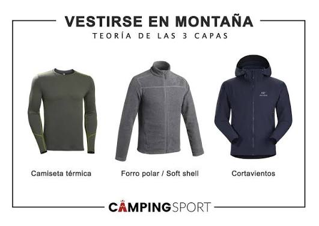

Cómo vestirse por capas en invierno
En Noruega, salir a pasear en invierno y quedarse quieto esperando el autobús son dos situaciones bastante distintas, incluso cuando el termómetro marca la misma temperatura. Ahí es donde viene bien vestirse por capas: puedes abrir la chaqueta o quitarte una prenda cuando entras en calor y volver a ponértela al parar.

Primera capa: mantener la piel seca
Es la que va en contacto con la piel. Una camiseta térmica de lana merina o de tejido sintético ayuda a alejar el sudor del cuerpo. Para caminar o esquiar resulta más cómoda que una camiseta de algodón, que tarda más en secarse.
Segunda capa: conservar el calor
Un forro polar o un jersey de lana retienen aire cerca del cuerpo. El grosor depende del plan: para una caminata cuesta arriba puede bastar un polar fino, mientras que para pasar un rato de pie viendo una carrera de esquí puede venir mejor uno más grueso.
Tercera capa: protegerse del viento y la lluvia
Es la chaqueta exterior. En un día seco y ventoso puede servir un cortavientos ligero. Si llueve o cae nieve húmeda, viene bien una chaqueta impermeable con capucha.